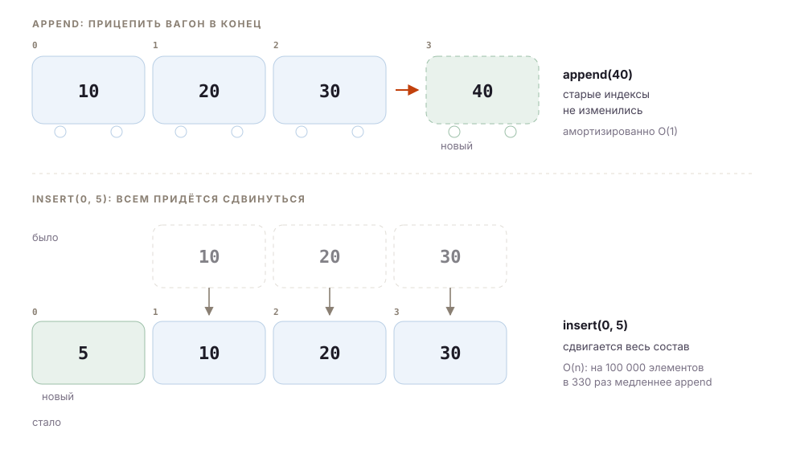
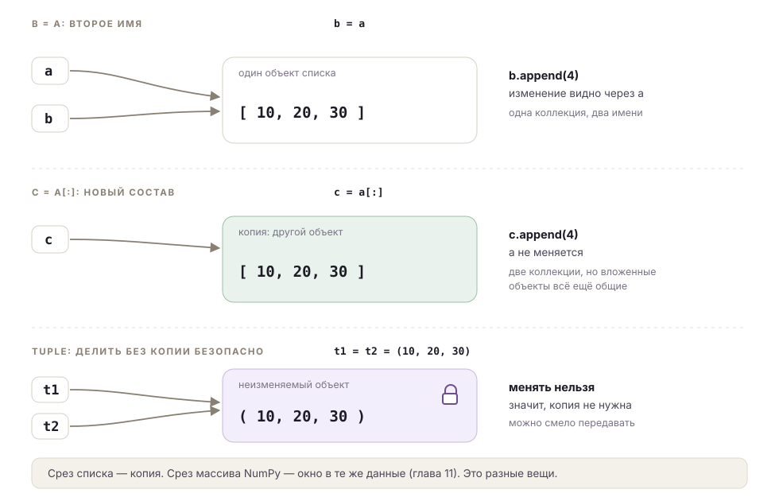

list и tuple: поезд и опечатанный контейнер Почему из двух похожих коллекций одна меняется, а другая может быть ключом словаря
Список — это поезд: вагоны можно прицеплять, отцеплять и переставлять. Tuple — опечатанный контейнер: состав зафиксирован при отправке. Из этой разницы вырастает всё остальное — изменяемость, хешируемость, копирование, память и скорость.
01Зачем это backend-разработчику
Список и кортеж — две самые частые структуры после словаря. И самая частая пара вопросов на собеседовании, где ответ «в list квадратные скобки, в tuple круглые» считается провалом.
- Ответ базы данных — список строк; тело JSON-массива — список объектов. Без списка не обходится ни один endpoint.
- tuple — это неизменяемая запись: строка из БД, координата, возврат нескольких значений, составной ключ словаря. Всё, что нельзя менять после создания.
- Ошибки копирования — самая дорогая категория багов в Python: изменил «копию», а поменялся исходный список. Здесь же корень багов с аргументами по умолчанию.
- Собеседование: «чем list отличается от tuple», «почему tuple ключ, а list нет», «что такое амортизированная сложность» — проверяют модель памяти, а не синтаксис.
Гардероб из прошлой главы принимает только те пальто, которые нельзя перешить. Tuple — это как раз запаянный пакет: его можно опечатать номерком и повесить на вешалку. Список — нет.
02Ассоциация-якорь: поезд и опечатанный контейнер
list — это поезд. Вагоны стоят в порядке, у каждого есть номер — индекс. Прицепить вагон в конец легко: остальные номера не меняются. А вот вставить вагон в середину — придётся переставить весь состав.
tuple — это опечатанный контейнер. Груз загрузили один раз и запечатали. Внутрь больше не заглянуть и груз не заменить — зато контейнер можно проштамповать номерком (посчитать хеш) и отдать сразу нескольким получателям, не делая копий.
Метафора объясняет четыре вещи сразу. Во-первых, индекс — это номер вагона, поэтому доступ по нему мгновенный. Во-вторых, вставка в начало двигает весь состав — отсюда O(n). В-третьих, срез собирает новый состав из тех же вагонов, а не показывает окно в старый. В-четвёртых, tuple нельзя изменить — поэтому его можно «опечатать» хешем и сделать ключом словаря.
03Ассоциативный ряд: восемь звеньев
Прочитайте один раз и воспроизведите по памяти. Это скелет ответа на собеседовании.
- Индексномер вагона, с нуля
- appendприцепить в конец — O(1) амортизированно
- insert(0)сдвиг всего состава — O(n)
- Срезновый состав из тех же вагонов (копия)
- Алиасингдва имени одного состава
- Неизменяемостьtuple: нельзя заменить вагон
- hashпечать на контейнере — если груз hashable
- Распаковкаразгрузить состав по именам
Обратите внимание: «срез» и «алиасинг» стоят рядом специально. Это две противоположные операции:
c = a[:] создаёт новую коллекцию, b = a — второе имя старой.
Большинство багов с «изменил копию, а поменялся исходник» живёт ровно между ними.
04Схема: append против insert

Именно поэтому в Python нет «вставки в начало за O(1)»: список хранит элементы подряд, и место для
нового первого элемента нужно освободить, сдвинув всё остальное. Если нужна очередь, где важны оба конца,
берут deque — о ней в главе 06.
05Как это устроено на самом деле
Под капотом обе коллекции — непрерывный массив ссылок на объекты. Разница в том, разрешено ли менять его длину и содержимое после создания.
| Свойство | list | tuple |
|---|---|---|
| Длина | меняется: append, pop, insert | фиксирована при создании |
| Содержимое | можно заменить элемент | нельзя: t[0] = … → TypeError |
| Память | 88 байт для трёх чисел (запас на рост) | 64 байта: только данные |
| Создание | медленнее: нужно выделить запас | быстрее: размер известен |
| Хеш | нет → нельзя в ключи | есть, если все элементы hashable |
| Типичная роль | изменяемая последовательность | запись, ключ, возврат нескольких значений |
Цифры памяти — sys.getsizeof([10, 20, 30]) и sys.getsizeof((10, 20, 30))
на CPython 3.12; они зависят от версии и платформы.
Почему append «амортизированно» O(1)
Список не выделяет память под каждый новый элемент. Он держит массив с запасом и, когда запас заканчивается, выделяет новый блок примерно в 1.125 раза больше и копирует туда элементы. Копирование дорогое, но случается всё реже — в среднем на одну вставку приходится константная работа. Это и есть «амортизированно»: отдельная операция может быть дорогой, средняя по серии — дешёвая.
Копия неглубокая — и это важно
a[:], list(a) и a.copy() копируют
только внешний массив ссылок. Вложенные списки остаются общими: изменили вложенный — изменился и «исходник».
Полная независимость — это copy.deepcopy, и она заметно дороже.
06Лаборатория: запустить и увидеть
Фрагменты файла 03_list_tuple_lab.py.
Вывод настоящий, получен на Python 3.12; время и id у вас будут другими.
Шаг 1. Второе имя или копия
a = [1, 2, 3]
b = a # второе имя того же объекта
c = a[:] # новый список с теми же значениями
b.append(4)
print("a =", a, "| c =", c)
print("a is b →", a is b, " a is c →", a is c)
b и a — одно и то же: изменили через одно имя, видно
через другое. c — отдельный объект. Проверка is сравнивает
идентичность объектов, == — значения.
Шаг 2. Копия неглубокая: вложенные объекты общие
matrix = [[1, 2], [3, 4]]
shallow = matrix[:]
shallow[0].append(99)
print("matrix =", matrix)
print("matrix[0] is shallow[0] →", matrix[0] is shallow[0])
Срез скопировал список списков, но не сами вложенные списки. Это не ошибка Python, а определение неглубокого копирования — и причина, по которой в pandas и NumPy так важно понимать, копия перед вами или окно.
Шаг 3. Три имени одного вагона
grid = [[0]] * 3 # три ссылки на ОДИН список grid[0].append(1) print(grid) fresh = [[0] for _ in range(3)] # три независимых списка fresh[0].append(1) print(fresh)
Умножение списка повторяет ссылки, а не создаёт новые объекты. Для неизменяемых элементов
([0] * 3) это безопасно, для изменяемых — классическая ловушка.
Шаг 4. Tuple: нельзя переставить груз, зато можно опечатать
point = (10, 20)
point[0] = 99 # TypeError: tuple object does not support item assignment
order = ("anna", "2024-05-01")
print({order: 1200}) # tuple — ключ словаря
{("anna", ["IT"]): 1200} # TypeError: unhashable type: 'list'
Ключом может быть только hashable-объект. Tuple хешируется по элементам — значит, каждый элемент тоже
должен быть hashable. Отсюда же растёт идея составного ключа: ("anna", "2024-05-01")
— один ключ из двух полей, без склеивания строк.
Шаг 5. append и insert(0): разница в порядке
n = 100_000
tail = []
for i in range(n):
tail.append(i) # прицепить в конец
head = []
for i in range(n):
head.insert(0, i) # вставить в начало: сдвиг всего состава
Оба цикла делают одно и то же «по смыслу» — складывают числа в список. Разница в 330 раз возникает
только из-за места вставки. Если нужна очередь с быстрым добавлением в начало — deque.
Шаг 6. sort меняет на месте, sorted возвращает новый
nums = [3, 1, 2] result = nums.sort() # сортирует nums, возвращает None print(result, nums) # None [1, 2, 3] print(sorted(nums)) # [1, 2, 3] — новый список
Сортировка стабильная: элементы с равным ключом сохраняют относительный порядок. Это пригодится
в pandas (sort_values) и SQL (ORDER BY по нескольким полям).
Шаг 7. += — это не всегда «прибавить»
def add_room_list(rooms, room):
rooms += [room] # для list это мутация: меняет список вызывающего
def add_room_tuple(rooms, room):
rooms += (room,) # для tuple это новая привязка: вызывающий не видит
my_list = ["kitchen"]
add_room_list(my_list, "hall")
print(my_list) # ['kitchen', 'hall']
my_tuple = ("kitchen",)
add_room_tuple(my_tuple, "hall")
print(my_tuple) # ('kitchen',)
+= вызывает __iadd__: у списка он меняет объект на месте,
у кортежа — возвращает новый. Поэтому функция, которая «просто добавила элемент», может незаметно
изменить данные вызывающего.
07Мост: где эта разница живёт в pandas, SQL и NumPy

pandas: позиция и порядок
import pandas as pd
df = pd.DataFrame({"user": ["Anna", "Ivan", "Petr"], "amount": [1200, 800, 2100]})
df.iloc[0] # позиция — как индекс списка
df.sort_values("amount") # как sorted(), но с ключом-столбцом
# tuple как составной ключ — это MultiIndex
df.groupby(["user", "amount"]).size()
sort_values возвращает новую таблицу (если не указать inplace=True) —
как sorted(), а не как list.sort(). А кортеж из двух
столбцов в groupby — прямой родственник tuple-ключа из главы 02.
SQL: порядок и составной ключ
ORDER BY amount DESC, user ASC -- стабильный порядок: второй ключ решает ничьи
PRIMARY KEY (order_id, product_id) -- составной ключ = tuple из двух полей
WHERE (city, age) > ('Москва', 30) -- сравнение кортежей целиком
В SQL строка таблицы тоже «неизменяемая запись» в том смысле, что её идентифицирует ключ, а не позиция. Это ровно та же идея, что tuple: набор значений фиксированной структуры.
NumPy: срез — это окно, а не копия
import numpy as np lst = [1, 2, 3] lst_slice = lst[:] lst_slice[0] = 99 # lst не изменился: это копия arr = np.array([1, 2, 3]) arr_slice = arr[:] arr_slice[0] = 99 # arr ИЗМЕНИЛСЯ: это view
Это главный контраст курса: в Python срез списка — копия, в NumPy — представление тех же данных. Глава 11 разберёт это подробно; здесь достаточно запомнить, что привычка из списков в NumPy приводит к багам.
08Шесть ошибок, на которых спотыкаются
Значение по умолчанию вычисляется один раз при определении функции. Если это список, он живёт между вызовами: def append_bad(x, acc=[]) накопит [1], потом [1, 2].
None, а внутри — if acc is None: acc = [].Умножение повторяет ссылку на один и тот же внутренний список. Правка любого элемента меняет все три.
[[0] for _ in range(3)] или copy.deepcopy.rooms += [room] для списка меняет объект вызывающего. Функция выглядит как «вернуть новое», а ведёт себя как «изменить чужое».
return rooms + [room], либо назвать функцию add_room_inplace и не удивлять читателя.sort() возвращает None. После присваивания переменная теряет список.
lst.sort() без присваивания или x = sorted(lst).Правка среза не меняет исходный список — это копия. В NumPy всё наоборот: срез массива — окно. Привычка переносится и рождает баг.
.copy().box = (1, [2, 3]); box[1].append(4) работает: кортеж не даёт заменить ссылку, но вложенный список менять можно.
frozenset) или frozen=True в dataclass.09Вопросы с собеседования
Схема ответа та же: тезис → механика → ограничение. Собеседнику важно услышать, что вы понимаете цену выбора, а не только синтаксис.
Чем list отличается от tuple?
Тезис: list — изменяемая последовательность, tuple — неизменяемая.
Механика: список хранит массив с запасом и умеет менять длину; кортеж выделяется ровно под свои элементы и после создания не меняется. Поэтому кортеж компактнее (64 байта против 88 для трёх чисел) и быстрее создаётся, а ещё он hashable — если все элементы hashable.
Ограничение: неизменяемость неглубокая: список внутри кортежа менять можно. И «круглые скобки» — не критерий: (1) — это число, кортеж — это (1,).
Почему tuple можно использовать как ключ dict, а list — нет?
Ключ должен быть hashable, то есть иметь стабильный хеш. У кортежа хеш вычисляется по элементам и не меняется, пока не меняются элементы. У списка хеша нет: его содержимое можно поменять после вставки, и «номерок» перестал бы соответствовать адресу.
Ограничение: tuple с изменяемым элементом тоже нехешируем — {("anna", ["IT"]): 1} упадёт с TypeError.
Что значит «амортизированно O(1)» для append?
Список хранит запас памяти. Пока он есть, добавление — одна запись в массив. Когда запас кончился, Python выделяет блок побольше и копирует элементы — это дорого, но случается редко, и в среднем на одну вставку приходится константная работа.
Ограничение: отдельная вставка может быть медленной, а худший случай одного вызова — O(n).
Почему insert(0, x) стоит O(n)?
Элементы лежат подряд. Чтобы освободить место в начале, нужно сдвинуть каждый элемент вправо — это n операций. Вставка в конец или удаление с конца такого сдвига не требует.
Срез списка — копия или представление?
Копия (неглубокая): новый список, те же ссылки на элементы. Вложенные объекты остаются общими. В NumPy срез массива — view: изменение среза меняет исходный массив.
Ограничение: для полной независимости нужен copy.deepcopy или .copy() у массива.
Чем a += b отличается от a = a + b?
Для списка += вызывает __iadd__ и меняет объект на месте, а a = a + b создаёт новый список. Для кортежа разницы в результате нет: он неизменяем, поэтому += всё равно создаёт новый объект и перепривязывает имя.
Ограничение: внутри функции разница видна снаружи: мутация меняет список вызывающего, перепривязка — нет.
Почему [[0]] * 3 — ловушка?
Умножение повторяет ссылки, а не объекты. Все три элемента указывают на один список, поэтому правка любого меняет все. Для неизменяемых элементов ([0] * 3) это безопасно.
Правильно: [[0] for _ in range(3)].
Когда tuple лучше list?
Когда структура фиксирована: возврат нескольких значений, координата, строка БД, ключ словаря, конфиг, который не должен меняться. Плюс память и скорость создания, если таких объектов много.
Ограничение: если данные будут меняться — tuple заставит пересоздавать объект; тогда список или dataclass.
10Три задачи: сначала своя попытка
01 Развернуть список
Разверните список [1, 2, 3, 4, 5] срезом и проверьте, что исходный список
остался прежним. Объясните, почему так.
Показать решение и разбор
nums = [1, 2, 3, 4, 5] reversed_nums = nums[::-1] print(reversed_nums) # [5, 4, 3, 2, 1] print(nums) # [1, 2, 3, 4, 5] print(nums is reversed_nums) # False
Что здесь важно. Срез с шагом -1 создаёт новый список с обратным
порядком. Альтернатива nums.reverse() перевернула бы исходный и вернула None —
та же ловушка, что с sort().
02 Транспонировать пары
Дан список пар. Получите два списка: первые элементы и вторые. Не используйте numpy и pandas.
pairs = [(1, "a"), (2, "b"), (3, "c")] # нужно: ([1, 2, 3], ["a", "b", "c"])
Показать решение и разбор
numbers, letters = zip(*pairs)
print(numbers) # (1, 2, 3)
print(letters) # ('a', 'b', 'c')
print(list(numbers), list(letters))
Что здесь важно. zip(*pairs) распаковывает список кортежей в аргументы
и возвращает кортежи — поэтому результат сразу можно распаковать в две переменные. Это тот же
механизм, что a, *rest = …, только звёздочка стоит в вызове.
03 Найти мутацию
Функция должна возвращать новый список тегов. Найдите, почему после её вызова меняется исходный список, и исправьте.
def add_tags(tags, new_tag):
tags += [new_tag]
return tags
original = ["python"]
add_tags(original, "sql")
print(original) # ['python', 'sql'] — а не ожидалось
Показать решение и разбор
def add_tags(tags, new_tag):
return tags + [new_tag] # новый список, исходный не тронут
original = ["python"]
updated = add_tags(original, "sql")
print(original) # ['python']
print(updated) # ['python', 'sql']
Что здесь важно. += для списка — мутация, а + —
создание нового списка. Если функция называется «add», это ещё не значит, что она меняет аргумент.
Явное имя add_tags_inplace снимает половину вопросов при ревью.
11Чек-лист освоения
Отмечайте только то, что можете объяснить без подсказок. Прогресс сохраняется в браузере.